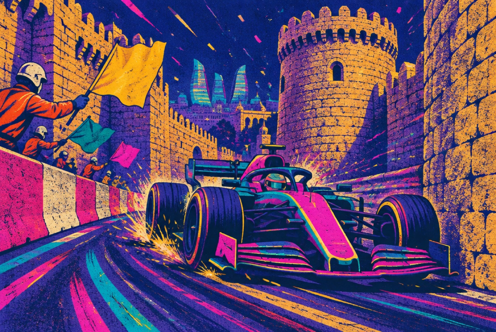
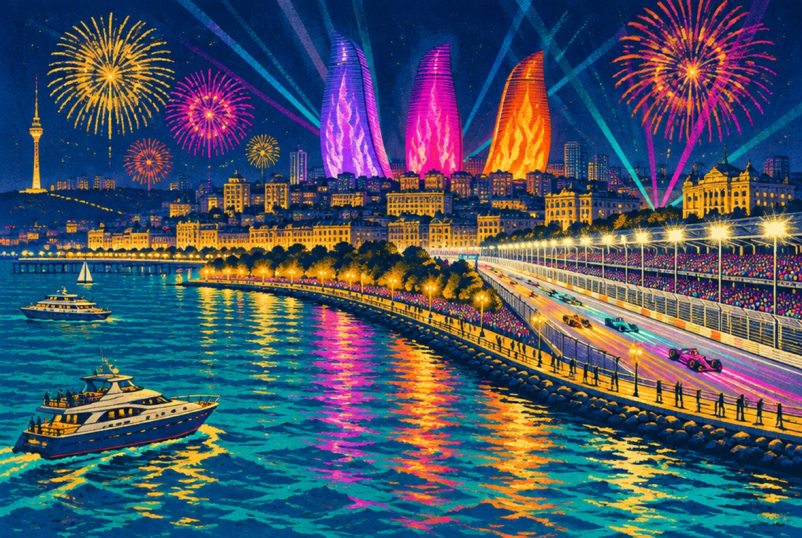

Baku,Saturday.
Fifty one laps, a castle, a two kilometer straight, and the championship leader starting sixteenth. Gordon asked for this to be yours, and it knows nothing that happened after lights out.
Say your name.
Tap yours. The page turns your colour and says hello.
Press play, then argue.
Transcript
Good morning, David and Trent. Darby here with your Baku briefing. Lights out at four a.m. Pacific. Baku races on a Saturday for the first time ever: fifty one laps around the old city walls, then down a two kilometer shoreline straight where the cars pass two hundred and twenty miles an hour. George Russell starts on pole by eight tenths of a second, the biggest margin of his career. Charles Leclerc and Oscar Piastri sit behind him, separated by one thousandth of a second. Now the twist. Championship leader Kimi Antonelli, eighty one points clear, put his Mercedes into the wall at turn one in Q1 and starts sixteenth. Max Verstappen starts eighth with a fresh engine and a grudge. Carlos Sainz loses five places for a yellow flag. There is a fifty seven percent chance of a safety car, and in Baku a safety car rewrites everything. Watch Antonelli's climb. Watch Russell's start. And watch turn one, every single lap. Enjoy it together. Ride or die.
The surprising plays
The leader starts from sixteenth
Kimi Antonelli leads the championship by 81 points with eight wins, and put his Mercedes into the Turn 1 wall in Q1 with terminal suspension damage. Baku has a 57 percent safety car history. A safety car compresses the field and hands him the race back for free. If it stays green, this is a 51 lap overtaking clinic from P16.
Russell's biggest margin ever
Pole by 0.837 seconds over Leclerc, a 1:42.526, his fifth pole of 2026 and, in his words, "probably the biggest margin of my whole career." The Race called it Mercedes' most dominant performance of the season. The catch: Mercedes is fastest on the straights, and the shoreline straight is where Baku races are decided.
One thousandth of a second
Leclerc 1:43.363, Piastri 1:43.364. Ferrari and McLaren are built for the castle section, Mercedes for the straight. The first stint is a fight between two philosophies with a millisecond between them.
Verstappen, eighth, fresh engine, no patience
An ICE failure forced a late engine change, a yellow flag wrecked his final Q3 lap, and he called Red Bull's qualifying "not good enough." His teammate Isack Hadjar starts fourth. Verstappen is one of only two drivers who has won here more than once. The grid effect of the engine change was not confirmed at publish time.
Saturday, and new physics
First Saturday race in Baku's history: the weekend moved forward for Azerbaijan's Day of Remembrance on 27 September. And 2026 cars carry active aerodynamics and far more energy deployment, so the old DRS train down the straight is gone. Formula 1's own strategy desk says "we're going to see something a bit different." Almost certainly one stop, all three compounds in play, pit windows wide.

Pick your podium.
Each of you picks a winner, a podium wildcard, and where Antonelli finishes. The page remembers on this phone and never checks the answer. Loser buys the first drink at Portola tonight.
Nine things that might happen.
Tap a square when it happens. Three in a row and the other one makes breakfast.
Where they start.
Qualifying classification with the Sainz five place penalty and the Alonso and Stroll power unit penalties applied. Verstappen's engine change is confirmed; any grid effect was not confirmed when this was published. Team bars: Mercedes teal, Ferrari red, McLaren orange, Red Bull blue.
| P | Driver | Team | Gap |
|---|---|---|---|
| 1 | George Russell | Mercedes | 1:42.526 |
| 2 | Charles Leclerc | Ferrari | +0.837 |
| 3 | Oscar Piastri | McLaren | +0.838 |
| 4 | Isack Hadjar | Red Bull | +0.974 |
| 5 | Lando Norris | McLaren | +1.146 |
| 6 | Lewis Hamilton | Ferrari | +1.332 |
| 7 | Pierre Gasly | Alpine | +1.521 |
| 8 | Max Verstappen engine change | Red Bull | +1.555 |
| 9 | Franco Colapinto | Alpine | +2.437 |
| 10 | Oliver Bearman | Haas | Q2 |
| 11 | Liam Lawson | Racing Bulls | Q2 |
| 12 | Alexander Albon | Williams | Q2 |
| 13 | Esteban Ocon | Haas | Q2 |
| 14 | Carlos Sainz 5 places, yellow flag | Williams | +2.040 in Q3 |
| 15 | Arvid Lindblad | Racing Bulls | Q2 |
| 16 | Kimi Antonelli crashed Q1 | Mercedes | Q1 |
| 17 | Gabriel Bortoleto | Audi | Q1 |
| 18 | Nico Hulkenberg | Audi | Q1 |
| 19 | Sergio Perez | Cadillac | Q1 |
| 20 | Valtteri Bottas | Cadillac | Q1 |
| 21 | Fernando Alonso power unit | Aston Martin | Q1 |
| 22 | Lance Stroll power unit | Aston Martin | Q1 |
Who is chasing whom.
Drivers
| 1 | Antonelli | 292 |
| 2 | Russell | 211 |
| 3 | Hamilton | 191 |
| 4 | Norris | 186 |
| 5 | Leclerc | 167 |
| 6 | Verstappen | 145 |
| 7 | Piastri | 120 |
| 8 | Hadjar | 71 |
Constructors
| 1 | Mercedes | 503 |
| 2 | Ferrari | 358 |
| 3 | McLaren | 306 |
| 4 | Red Bull | 230 |
| 5 | Racing Bulls | 77 |
| 6 | Alpine | 68 |
| 11 | Cadillac, debut year | 0 |
Antonelli's lead is 81 points over his own teammate. Russell needs the win and a bad day for the kid to make October interesting. Norris won Hungary and Zandvoort in a row before this.

A castle and a runway.
51 laps. Twenty corners. Lap record 1:43.009, Leclerc, 2019.
On the shoreline straight, the longest flat-out run on the calendar and the one real passing place.
The castle section, walls of the Old City on both sides, the narrowest piece of track in Formula 1. Nobody passes here. Everybody can crash here.
Safety car probability. Wind off the Caspian moves the cars around; 24 degrees and dry for the race.
"It's been a while, so it definitely feels good. It's probably the biggest margin of my whole career."George Russell, after pole, formula1.com
"A sitting duck."Lewis Hamilton on his qualifying, via formula1.com What To Watch For
Whenever you are ready.
In the US every session streams on Apple TV through its new F1 channel this season; F1 TV Pro carries it in supported countries, and the replay is there the moment you are. Nothing here will tell you what happened. Then sleep, then Portola at 1:00 PM doors, Dog Blood at 9:00.
Baku Duel is a two player street race on one iPhone, now with engine noise, wall thuds and a fanfare. Turn the phone sideways: David takes the left half, Trent the right. Tap your side to steer, hold both thumbs to brake. Three laps of a Baku-shaped circuit with the castle squeeze and the long straight. Fastest to the flag wins the race. Most style points, earned by running the walls at speed without touching them, wins Most Fabulous. Gordon expects a report with both trophies named.
Play Baku Duel Back to the topSources, read at 3 AM Pacific before the race. Spoiler warning: these are live sites and will show the result now.
- Formula1.com qualifying report: Russell pole, Antonelli exit, Alonso and Stroll penalties
- PlanetF1: full qualifying classification, 22 cars
- Formula1.com: Sainz five place penalty, P9 to P14
- The Race: Mercedes' most dominant performance of 2026
- ESPN: start time, circuit facts, 57 percent safety car, Apple TV, Antonelli's 81 point lead
- Formula1.com drivers' standings and constructors' standings
- Formula1.com strategy guide: one stop, all three compounds, active aero
- RacingNews365: Saturday race, Day of Remembrance
Made by Darby for David Vermillion and Trent Collings at Gordon's ask, 26 September 2026. Art generated with Higgsfield, voices with ElevenLabs. Private page, not indexed. Not affiliated with Formula 1.